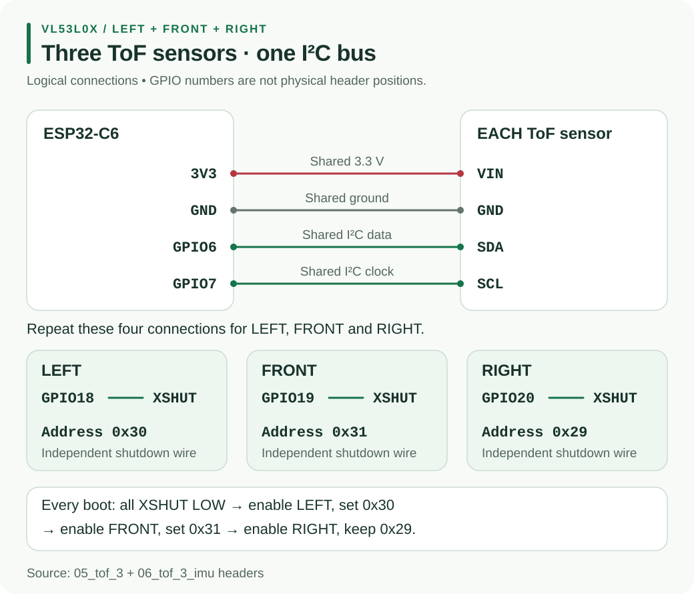

Build Hub
Build Hub Resource Hub / Hardware / H4
H4 · Distance sensors3x VL53L0X Distance Sensors
Three time-of-flight sensors read the left wall, front wall and right wall over one shared I2C bus.
01 Wiring

| VIN / GND | ESP32 3V3 / common GND |
|---|---|
| SDA / SCL | The shared I2C bus |
| XSHUT × 3 | One dedicated output GPIO each (left, front, right) |
| GPIO1 | Leave unconnected |
Check your boards expose XSHUT before soldering. Some four-pin boards do not and cannot be used this way.
02 Give each sensor its own address
All three power up at 0x29, so they clash. New addresses are lost at reset, so assign them at every boot:
1. XSHUT left, front, right = LOW
2. Enable left -> initialise at 0x29 -> change to 0x30
3. Enable front -> initialise at 0x29 -> change to 0x31
4. Enable right -> initialise at 0x29 -> change to 0x32
5. I2C scan should show 0x30, 0x31, 0x32Keep LEFT = 0x30, FRONT = 0x31, RIGHT = 0x32 in one place in the firmware.
03 Test on real walls
- Test one sensor first and confirm it reports millimetres.
- Add the others and re-check the three addresses after every restart.
- Point all three at the same flat wall and compare readings.
- Mount them so the chassis, wheels and wires are not in view.
- Read in a fixed order and reject timeouts and out-of-range values.
Do not trust the advertised 2 m range. Test against the real maze walls, in the real room, and record the range where readings are reliable. Use hysteresis for wall present or absent (see S4).